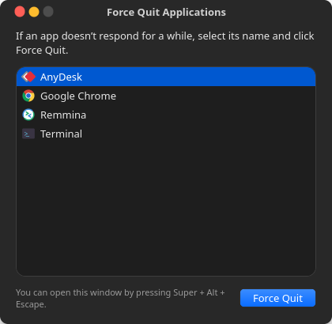

The macOS ⌘ ⌥ esc panel, cloned for Ubuntu and GNOME. Press Super Alt Esc, pick the frozen app, click Force Quit.

Super+Alt+Esc opens it from anywhere. Pressing it again brings the window to the front.
Frozen apps are shown in red, so you can see which one is stuck.
“Do you want to force ‘App’ to quit? You will lose any unsaved changes.”
Ctrl- or Shift-click to select several apps, then quit them together.
Works where xkill doesn't, by finding apps through systemd scopes instead of windows.
Follows your GNOME appearance and keeps the macOS look on any GTK theme.
Needs Python 3 and GTK 4, which ship with Ubuntu and Fedora Workstation.
git clone https://github.com/adgsenpai/AppleLinuxLikeForceQuit.git
cd AppleLinuxLikeForceQuit
./install.shThat's it. Press Super+Alt+Esc. Want a different key? SHORTCUT='<Control><Super>Escape' ./install.sh. Remove with ./uninstall.sh.
Why Wayland makes “list every app” hard, how systemd scopes solve it, and how I made GTK 4 look like macOS.
Every way to kill an unresponsive app: the GNOME dialog, System Monitor, terminal commands, and a one-key shortcut.